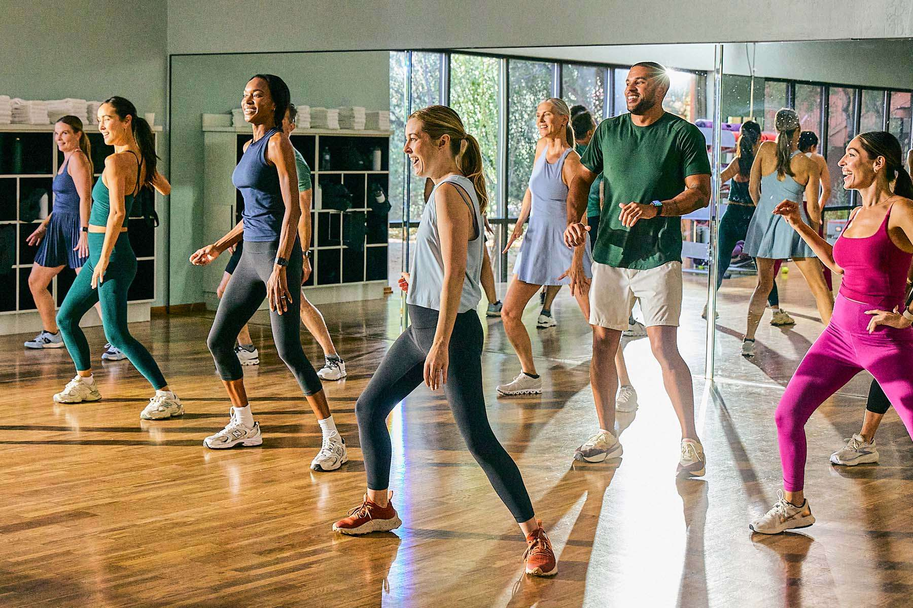
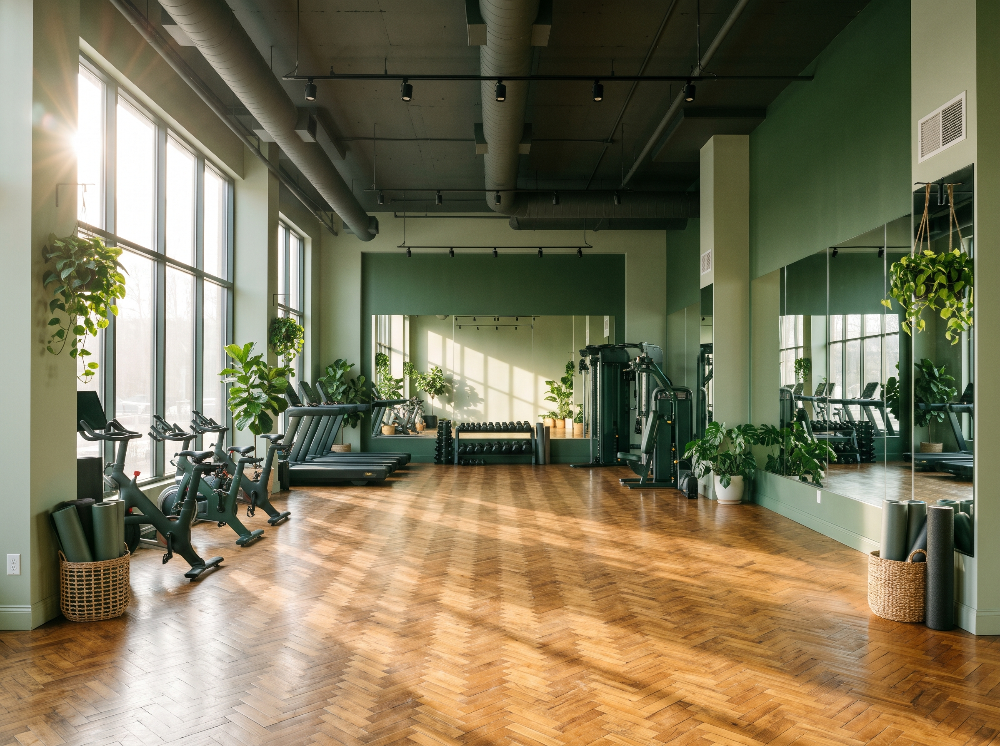

Dança — Fit Dance
O Fit Dance é uma aula coletiva que une coreografias simples e exercícios aeróbicos ao som de músicas animadas. É a modalidade ideal para quem quer se movimentar, queimar calorias e sair da rotina se divertindo.
Sobre a modalidade
Não é preciso saber dançar para participar: as coreografias são ensinadas passo a passo e repetidas durante a aula. As turmas misturam ritmos como pop, funk e latino, sempre com aquecimento e alongamento no início e no fim.


Benefícios do Fit Dance
A aula une música e movimento para cuidar da saúde sem perder a diversão — e tudo no seu ritmo.
-
Coração e fôlego
A aula aeróbica melhora o condicionamento cardiovascular de forma progressiva.
-
Gasto calórico divertido
Queime calorias dançando, sem a monotonia de um treino repetitivo.
-
Coordenação e ritmo
As coreografias desenvolvem coordenação motora, equilíbrio e senso de ritmo.
-
Menos estresse
A música e o convívio com a turma reduzem o estresse e aumentam a disposição.
Quando acontecem as aulas
As turmas de Fit Dance acontecem em vários horários ao longo da semana, incluindo períodos da manhã, da tarde e da noite. Consulte a grade completa na página de horários.